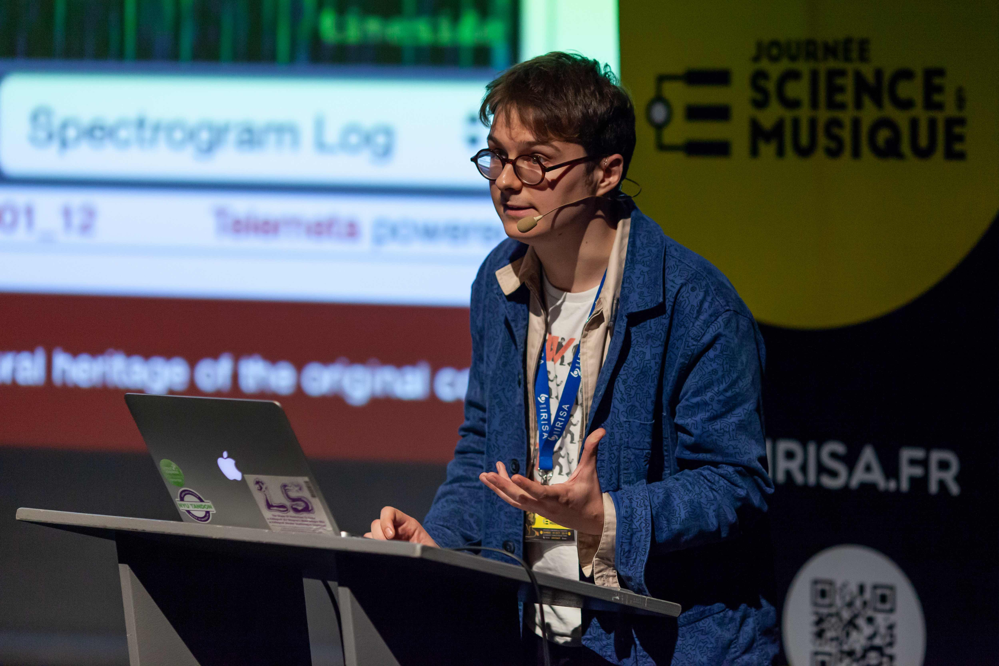
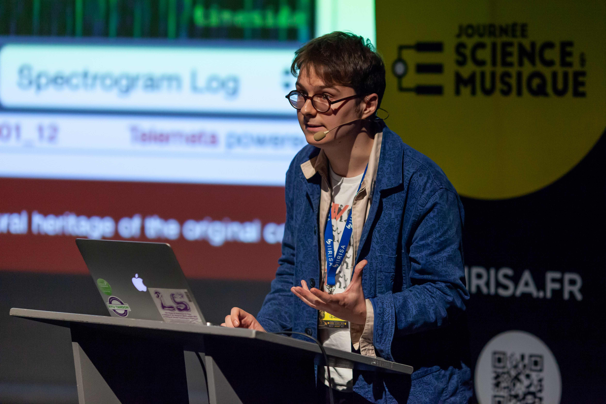

Kymatio: Deep Learning meets Wavelet Theory for Music Signal Processing#
This is a web book written for a tutorial session of the 24th International Society for Music Information Retrieval Conference, Nov 5th, 2023 held in Milan, Italy. The ISMIR conference is the world’s leading research forum on processing, searching, organising and accessing music-related data.
Overview#
An Exploration of Music Signal Processing Using the Kymatio Toolkit: A Deep Dive into Wavelet Scattering for Audio
Music Information Retrieval (MIR) is a critical domain within the landscape of digital signal processing and computational musicology. The open-source Kymatio toolkit [] provides researchers and practitioners a robust framework for the analysis and synthesis of music signals using differential methodologies. Kymatio, designed in Python, integrates the principles of deep learning with wavelet scattering.
In its recent version (v0.4), Kymatio incorporates the joint time–frequency scattering transform (JTFS). This transform is notably influenced by a prevalent neurophysiological model in musical timbre perception: the spectrotemporal receptive field (STRF) [].
The efficacy of scattering transforms in MIR has been empirically established in diverse areas, including musical instrument classification [], neural audio synthesis [], and playing technique recognition, among others.
This tutorial encompasses:
An in-depth introduction to wavelet and scattering transforms contextualized with pertinent MIR examples.
Detailed examination of music classification and segmentation under the purview of scattering.
Analytical insight into the role of the perceptual distance objective in gradient descent and a comprehensive study of the Generative Evaluation of Audio Representations (GEAR) [].
A systematic overview of Kymatio’s user interface, emphasizing the extensibility of its core routines.
A critical evaluation of the advantages and limitations of scattering within MIR research.
Concluding remarks that highlight both the current limitations and prospective directions of scattering in the field.
Motivation#
For the MIR academic community, the significance of scattering transforms in audio classification, timbre representation, and other areas is of paramount importance. Recent scholarly work underscores the capabilities of JTFS in representing distinctions among musical instruments and their associated playing techniques []. Moreover, recent advancements have seen JTFS being employed to fine-tune parameters in sound synthesis [].
This tutorial is intended for both MIR scholars and professionals, offering a rigorous introduction to wavelet scattering. Additionally, it will be invaluable for those in the fields of audio engineering and signal processing seeking an advanced understanding of MIR methodologies.
Outcomes#
The content of this book has been designed to delivered as a tutorial at ISMIR 2023. We intend for this to be an introductory overview of theory and applications of scattering transforms in audio processing and music information retrieval, with strong relevance to the ISMIR community and beyond. By following the contents of this book and the computational experiments in the supplementary Python notebooks, we hope that participants develop a deeper intuition for the foundational concepts of wavelet scattering for application to 1D signals. After completing this tutorial, readers will have an understanding of:
The mathematics behind 1D/2D wavelet and the scattering transforms.
Wavelet scalogram and first/second-order scattering transform visualizations.
How wavelet filterbanks are constructed for scattering transforms.
How the scattering transform is computed.
How to interpert visualizations of the scattering transforms of synthetic and real-world musical signals.
The connection between scattering and other time-frequency representations, such as the CQT.
The difference between the scattering transform and Fourier-based time-frequency representations.
The physical properties of audio signals captured by scattering, in particular spectrotemporal modulations.
The hyperparameters of the scattering transform.
How the filterbank parameters affect the resulting numerical representation of an audio signal.
Understanding of Kymatio’s frontend API for 1D signals.
Avenues for research in MIR with scattering transforms.
For applications in deep learning and MIR, we run the reader through practical examples of:
Performing scattering and time-frequency transforms on audio signals with Kymatio.
Visualization of scattering and time-frequency scattering coefficients.
Preparing and preprocessing scattering transforms for music classification with DNNs.
Automatic differentiation of scattering transforms in Torch.
Parametric synthesizer similarity representation and retrieval with scattering.
Contribute to the Kymatio community#
We welcome contributions and participation via the Kymatio community on Github. Feel free to submit issues, pull requests and feature requests.
Authors#
 

{kind=link}
{kind=link}
Cite this book#
If you use this book or any of accompanying code in your work please consider citing this book.
@book{vahidi2023kymatio,
Author = {Vahidi, Cyrus and Mitcheltree, Christopher and Lostanlen, Vincent},
Month = Nov.,
Publisher = {ISMIR},
Title = {Kymatio: Deep Learning meets Wavelet Theory for Music Signal Processing},
Year = 2023,
Url = {https://kymatio.github.io/ismir23-tutorial},
}
Contents#
Introduction
Basics of wavelets
Introduction to Scattering
Scattering in MIR
GEAR: Generative Evaluation of Audio Representations
Differentiable Time-Frequency Analysis